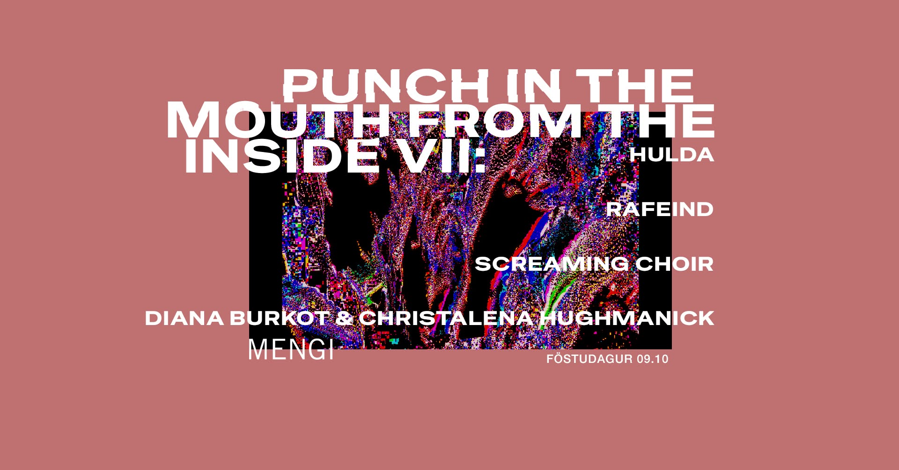
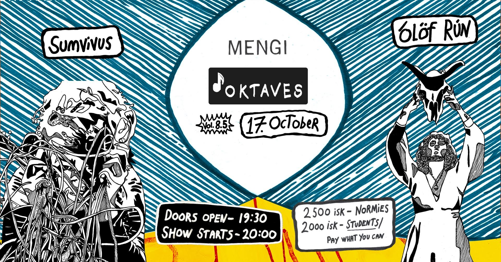

Upcoming Events

FRI 16.10 PUNCH IN THE MOUTH FROM THE INSIDE VII: Hulda/rafeind/SCREAMING CHOIR/Diana & Christalena
Tickets Friday, October 16th PUNCH IN THE MOUTH FROM THE INSIDE VII: HULDA / RAFEIND / SCREAMING CHOIR / DIANA BURKOT & CHRISTALENA HUGHMANICK doors 19:30 / show 20:00 2500kr / 2000kr students / pay what u can

SAT 17.10 Oktaves presents: Sumvivus / Ólöf Rún
Tickets Saturday, October 17th OKTAVES presents: SUMVIVUS ÓLÖF RÚN doors 19:30 / show 20:00 2500kr / 2000kr students / pay what u can more info TBA

THU 22.10 Strandir (IS/DE)
Tickets Thursday, October 22nd STRANDIR (IS/DE) doors 19:30 / show 20:00 2500kr / 2000kr students / pay what u can Tumi Torfason : trumpet Tobias Link : trombone Daníel Helgason : guitar & electronics Stefan Vidal-Schneider : drums & electronics Strandir is a German/Icelandic quartet that has been working intermittently for just over a year. A series of coincidences unexpectedly brought the group together to discover a new sonic landscape to explore. A vast space spanning everything from the sparse to the dense, from the acoustic to the electronic and from the improvised to the written. Since their debut as a trio in Mengi last year they have since added a fourth member, performed in Denmark and Germany, recorded material that will soon be released and found their collective voice through free improvisation sparked by simple themes. The group returns to Mengi for a new rendition of their sonic image.

SAT 24.10 Jesper Pedersen: 50 Years On Planet Earth
Tickets Saturday, October 24th JESPER PEDERSEN: 50 YEARS ON PLANET EARTH doors 19:30 / show 20:00 2500kr / 2000kr students / pay what u can Jesper Pedersen is celebrating 50 years on Planet Earth with a concert at Mengi. For this half-century celebration, Jesper will be joined by Ása Önnu Ólafsdóttir (Asalaus), Berglind María Tómasdóttir, Helga Björg Jóhönnu Árnardóttir and Katie Buckley for an evening of music, sound, improvisation and collaboration. Expect electronics, acoustic instruments, strange sounds, unexpected combinations and probably a few surprises. Jesper is a Reykjavík-based composer, sound artist, performer and educator. Working with electronic sound since the 1990s, his practice spans electroacoustic music, experimental composition, sound art, installation and improvisation. He performs on modular synthesizers, electronics, theremin and unconventional instruments, exploring texture, noise, drone and spatial sound, both solo and in collaboration with others. https://jesper.is
SUN 25.10 petals & Magnús Trygvason Elíassen
Tickets Sunday, October 25th PETALS & MAGNÚS TRYGVASON ELÍASSEN doors 19:30 / show 20:00 2500kr / 2000kr students / pay what u can petals : flutes, shakuhachi, bass clarinet, b-flat clarinet, piano, tenor saxophone, bells, small percussion Magnús Trygvason Eliassen : drums, percussion petals & magnús invite you to listen to two sets of their new duo project frímínútur, icelandic for recess or playtime where they try to recreate the musics of the playground. https://peterokalule.bandcamp.com/album/fr-m-n-tur tree whistles you over, one who mutters plus minus in leaf margin’s stealth is already there, s-n-e-m-m-a for the skipping time, chime, chase elastic circles braceletting afterthought of double-that, flick-of-the tryst the side-grove secreting the line. burr bells, spells away in the canopy beholds all the turning points in the game w/o reporting back, takk fyrir for that berried half of dangling legged snarl. a clue, rope waved below ligules of grass to unseek this this, sometimes, sometimes ~ Katy Lewis Hood